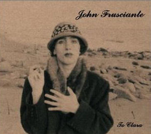
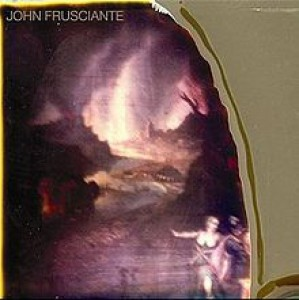
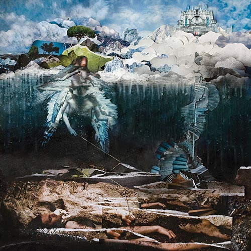

Tento debutový sólový album Fruscianteho vznikol vďaka podpore Fruscianteho priateľov, ktorí tvrdili, že dnes už neexistuje dobrá hudba. Album bol vydaný 4. novembra 1994. Kvôli slabým predajom bol stiahnutý z obchodov, len aby sa do nich naspäť vrátil v roku 1999. Prvá polovica bola nahraná v roku 1992, druhá bola nahraná počas koncertovania albumu Blood Sugar Sex Magik, ktorý nakoniec viedol k jeho odchodu z RHCP.
Album sa síce nestretol s veľkým verejným úspechom, avšak kritici mali zväčša pozitívny názor. Predpokladalo sa, že sa predalo iba okolo 45 000 kópií, keď v roku 1998 Frusciante požiadal o zástavu tlače.
Curtains je v poradí siedmy sólový album, ktorý bol vydaný 1. februára 2005. Bol nahraný za necelých 10 dní v obývačke Frusciantoveho domu. "Len som sedel na vankúši a opieral som sa o gauč." Na albume sa taktiež objavil gitarista kapely The Mars Volta a Fruscianteho priateľ Omar Rodriguez-Lopez. V pesničkách "Lever Pulled" a "Anne" sólovali spoločne, pričom používali iba jeden zosilovač.
Na rozdiel od väčšiny Fruscianteho sólovej práce, tento album je z väčšej časti akustický. Je to jeho najkrajší a zároveň najsmutnejší album, ktorý znie skôr ako Cat Stevens ako Jimi Hendrix. Napriek krásnym gitarovým častiam, centrom pozornosti by mali byť texty piesní.
The Empyrean je ôsmy sólový album, ktorý bol nahraný počas prestávky RHCP po vydaní albumu Stadium Arcadium. Tento album bol nahrávaný s prestávkami od roku 2006 až 2008. Na tomto albume sa podieľalo mnoho muzikantov ako Flea, Josh Klinghoffer alebo Johnny Marr.
Frusciante si v živote prešiel peklom, čo sa odráža na textoch jeho piesní, ktoré sa menia na rozprávky a neskutočné zážitky a interakcie s inými duchmi a dimenziami. The Empyrean ponúka krátky pohľad na psychické a duševné výlevy Fruscianteho hlavy.